In this section, we'll create a very simple TOOL application in a step by step fashion. The application will be a window with two panes. The user will be able to enter a number into the top pane, and the application will respond by showing the factorial of that number in the bottom pane. The code for the entire application would fit on this page, but we will show you how you might go about creating the application using the windowing system and the built-in browsing and debugging tools. Development of a TOOL application typically proceeds by trial and error.
Begin by popping up the system menu and selecting the Browse Hierarchy option:
| 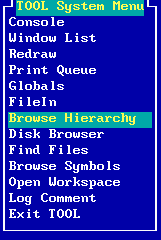 |
This opens a window which allows you to browse through much of the source code implementing the TOOL programming environment, including the source code for two built-in applications: the DiskBrowser the Workspace.
| 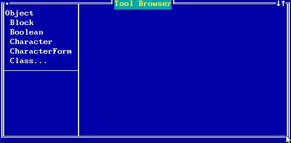 |
A TOOL application is generally written as a subclass of Model. To find that class in the class hierarchy browser, pop up the Class Menu (with the cursor in the upper left pane of the Tool Browser window, press Alt, Alt-=, or click on the right mouse button) and choose the Find Class option:
| 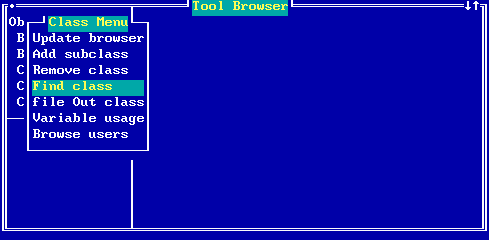 |
Enter Model, the name of the class you wish to find:
| 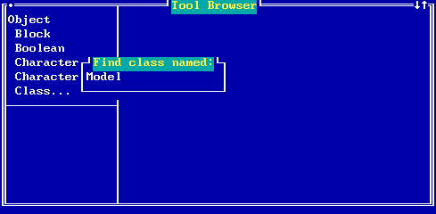 |
The browser will position to that class in the hierarchy. The pane on the right will show the class definition (actually a message send which can be executed as we will see later) and the pane in the lower left will show a list of methods defined by the Model class. These methods correspond to messages which can be sent to instances of Model and of its subclasses.
| 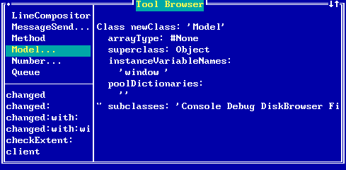 |
Our application will be a subclass of Model. To add a subclass of Model, pop up the Class Menu and select the Add subclass option:
| 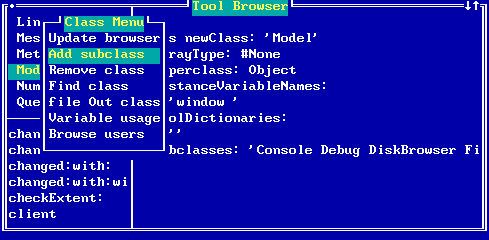 |
Enter the name of the application class, say FactorialTest:
| 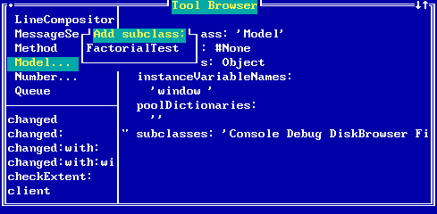 |
A new class will be created, and the browser will show its information. Notice that the new class has no instance variables (although it inherits those of its superclass) and no methods:
| 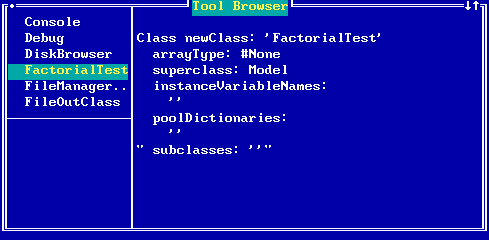 |
Our application will require an instance variable to hold the number which the user enters. Edit the class definition message to include an instance variable named number:
| 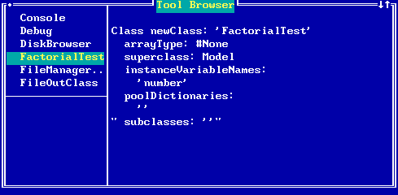 |
We now need to execute the class definition message so that the browser will add this instance variable to our class. To do this, pop up the menu for the right pane (a text pane) and choose the Accept option. This will cause the message in the pane to be compiled and executed to modify our new class.
| 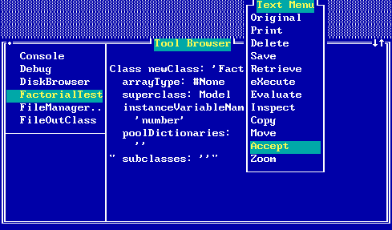 |
Applications can register themselves with the system by defining a method named #appMenuItem. This method must return a string to appear in the system menu to allow the user to start the application. You may wish to take a minute now and look at the classes which implement this method (DiskBrowser, Toolbox, and Workspace). Then return to FactorialTest and add our first method. Pop up the Method Menu in the lower left pane, and select the New method choice:
| 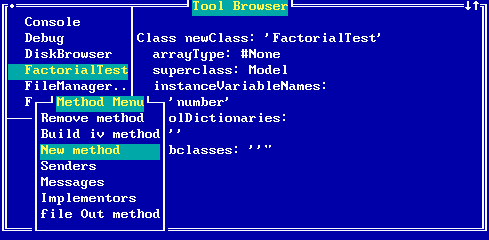 |
This prepares the browser to receive a method definition in the right pane:
| 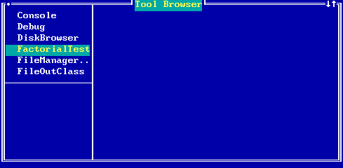 |
Type in this method definition. The selector #appMenuItem is used by the system to determine those subclasses of Model which are applications which need to be represented on the System Menu.
| 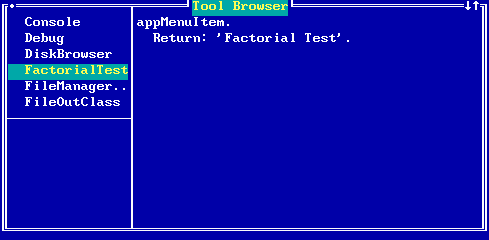 |
To add the method to the system, pop up the Text Menu and choose the Accept option. This will cause the method to be compiled and added to the system.
| 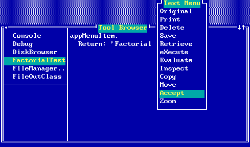 |
Now, move the cursor out of the browser (below it in this example) and pop up the system menu:
| 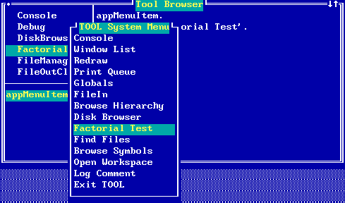 |
If you select the Factorial Test option, a large red window will appear on the screen telling you that the class FactorialTest has no method named #appMenuStart. Press F7 to close the red window (it is a debugging tool which we will examine later). To get our application to work, we will need to define a method named #appMenuStart which must create and open a window. We will begin with a very simple method, and gradually refine it until our application is complete.
Choose the New method option from the Method Menu (popped up from the lower left pane) and type in and accept a method to launch our application:
| 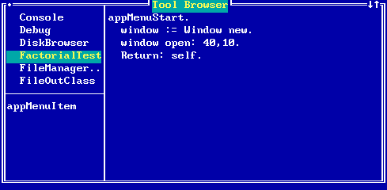 |
Having accepted this method, pop up the System Menu and again select the 'Factorial Test' menu item. This time you will not get a debugging window, but will see a simple application window:
| 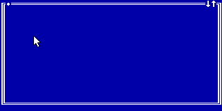 |
It will be moveable and resizable, but otherwise has no functionality. Let's add a window label. To do this, return to the browser (close the new window, and the browser will come on top), and edit the #appMenuStart method to read:
appMenuStart.
window := Window new
label: 'Factorial Test'.
window open: 40 , 10.
Return: self.
If you now start our application, its window will have a label:
| 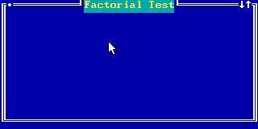 |
We have seen how to start an application; let's now consider how it ends. This is generally under the user's control. When the user closes the window, the application is over. However, the window does send a message to inform its model that it is being closed. Add the following method to our class:
exit. Tool bell. Tool warning: 'Factorial Test Complete'. Return: self.
Now if you open and then close a Factorial Test window, the bell should sound and a pop up message should appear. This in fact fails to happen. To see why, inspect the application. To do this, pop up the window menu on the application window. You will see that you are inspecting an instance of model. This is because we did not let our window know who its model was, and so it used as a default a Model instance. Return to the browser and edit the #appMenuStart method to read:
appMenuStart.
window := Window new
label: 'Factorial Test';
model: self.
window open: 40 , 10.
Return: self.
Now if you open and close the application window, you should hear the bell and see the pop up message (click on 'OK' to dismiss this message). Before continuing you may wish to remove the #exit method from our class (so that it will use the default provided by the Model class). This tutorial assumes that you choose to do this. To remove the method, first select it in the selector pane (lower left), then pop up the Method Menu and select the 'Remove method' menu item.
Now we will write code to divide our application window into two panes. The complete text of the #appMenuStart method is given here:
appMenuStart.
window := Window new
label: 'Factorial Test';
model: self;
panes: (PanelFence new horizontal
position: 10
side1: (QueryPane new
model: self;
contentSelector: #number;
changeSelector: #number:)
side2: (TextPane new
model: self;
contentSelector: #text;
menuSelector: #textMenu)).
window open: 40 , 10.
Return: self.
Accept this method. If you now pop up the system menu (be sure to move the cursor outside of the browser first), and select the Factorial Test option, you will again see a red window:
| 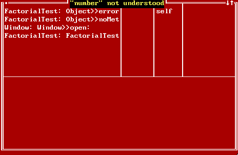 |
FactorialTest is expected to have a method named #number. Looking back at the #appMenuStart method we can see that the QueryPane we will be using in our window is given the value #number for its contentSelector. This means that the QueryPane can send us the message #number when it needs a string to display as its contents. Dismiss the debug window (press F7) and enter and accept the required method for FactorialTest:
| 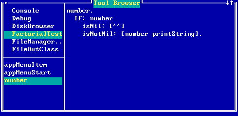 |
We could notice also that the TextPane we will be using is given the symbol #text as its contentSelector, so we know that we will need a method named #text also (for now, we will have the text pane just display the string 'Test Results Here'; later we will come back to this method and have it display the factorial):
| 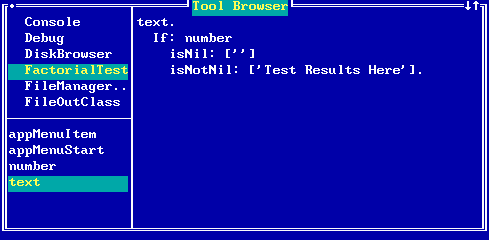 |
Now pop up the system menu and try the application again. This time our window opens with the two panes:
| 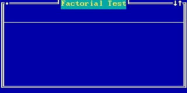 |
Since our number instance variable has never been assigned a value, it will be 'nil' or undefined, so that both panes are displaying the empty string (ie. nothing). Try typing a number into the top pane:
| 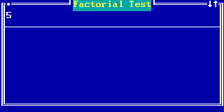 |
When you press Enter, you will see another red window:
| 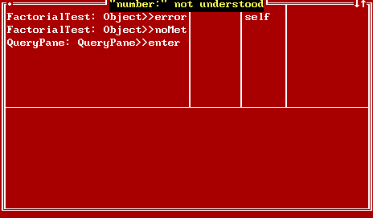 |
The QueryPane we are using expects to be able to send the message #number: to its model (our FactorialText object). This is because our #appMenuStart method gave the QueryPane this symbol as its changeSelector when it was setting up the window. So we will need to add a method for #number: to our class (first, dismiss the red window by pressing F7):
| 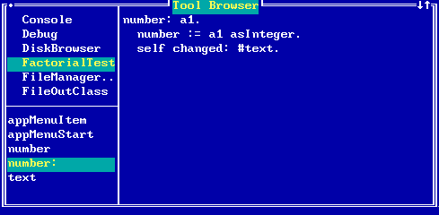 |
Now when you try to press Enter from the top pane of the Factorial Text window, you will see a different debug window:
| 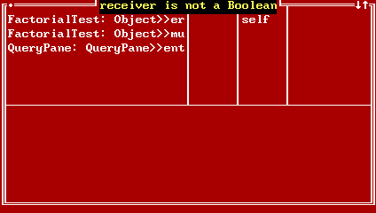 |
The QueryPane expects the result returned by its model's changeSelector method to be a Boolean (either true or false). In other words, the model gets to say whether or not it accepts the value entered by the user. We will modify our #number: method to return true:
| 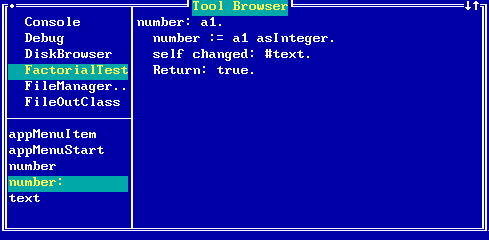 |
Now when we press Enter in the upper pane of our Factorial Test window, we will see the result:
| 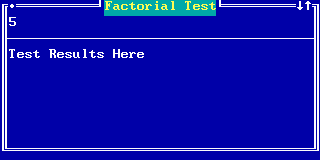 |
Do you know where the string 'Test Results Here' comes from? It is what our #text method (corresponding to the TextPane's contentSelector) returns, as you can see by selecting the #text method in the browser:
| 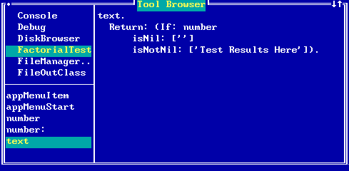 |
Edit the method to return a printable version of the factorial of the number:
| 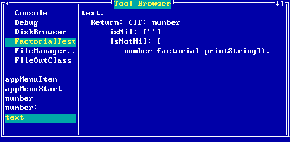 |
Now when you press Enter in the upper pane of the Factorial Test window, you will see the correct result:
| 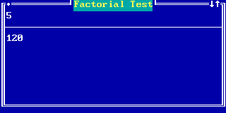 |
You may now wish to try other numbers in the top pane of our window. Expect the calculation to take some time for numbers much bigger than 100 because factorials quickly become very large numbers.
You may now create a file containing the new application. To do this, move the cursor to the class pane of the source code browser and pop up the menu. Select the menu item file Out class. Give a file name in the dialog which appears and select OK.
| 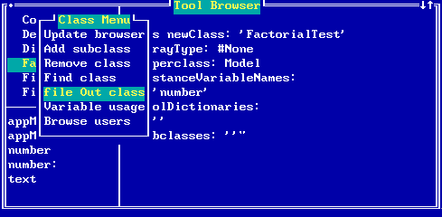 |
The resulting file will contain the text of the application program. The format of this package file is described in Appendix 3.
{.
Class newClass: 'FactorialTest'
arrayType: #None
superclass: Model
instanceVariableNames:
'number'
poolDictionaries:
''
" subclasses: ''"}
{FactorialTest>>appMenuItem.
Return: 'Factorial Function'.}
{FactorialTest>>appMenuStart.
window := Window new label: 'Factorial Function';
model: self;
panes: (PanelFence new horizontal;
position: 10 side1: (QueryPane new model: self;
contentSelector: #number;
changeSelector: #number:) side2: (TextPane new
model: self;
contentSelector: #text;
changeSelector: #textMenu)).
window open: 40 , 10.
Return: self.}
{FactorialTest>>exit.
Tool bell.
Tool warning: 'Factorial Application Complete'.
Return: self.}
{FactorialTest>>number.
Return: (If: number
isNil: ['']
isNotNil: [number printString]).}
{FactorialTest>>number: a1.
number := a1 asInteger.
self changed: #text.
Return: true.}
{FactorialTest>>text.
Return: (If: number
isNil: ['']
isNotNil: [number factorial printString]).}
Copyright © March 8, 1995 Bruce Conrad